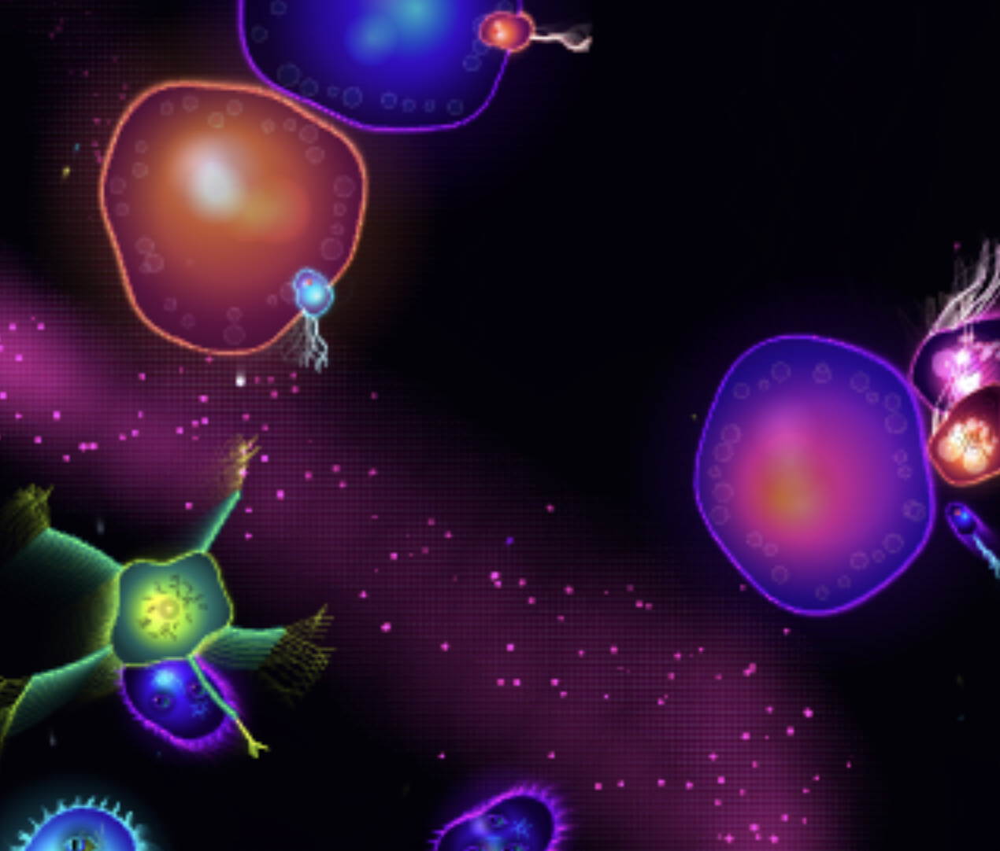
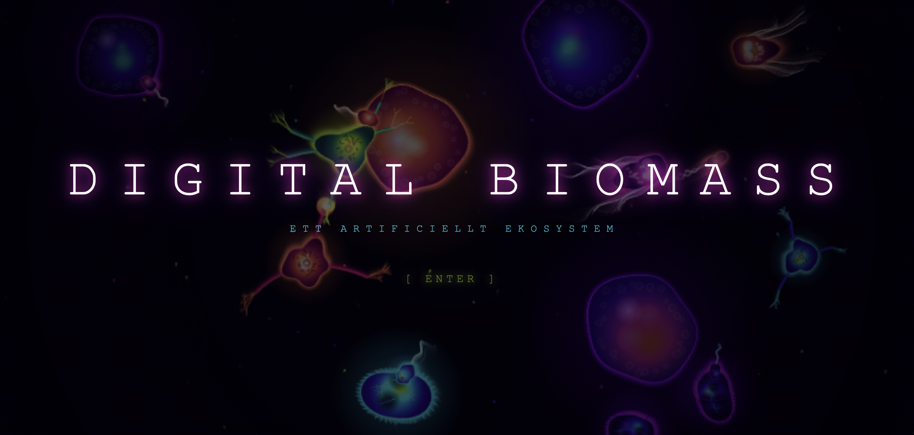
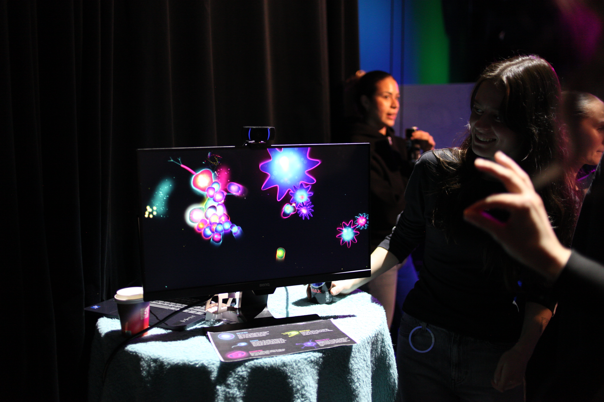
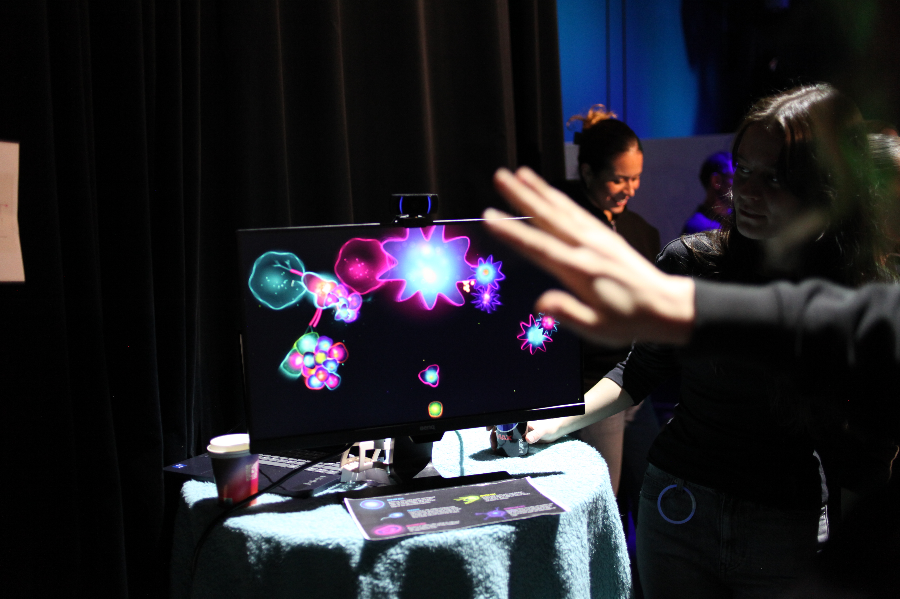

Based in Stockholm, I am a 24-year-old student in my second year of the IT, Media and Design programme at Södertörn University.
Digital Biomass is an interactive digital artwork about the border between the digital and the biological. As artificial intelligence develops rapidly, it becomes interesting to ask what is alive and what is not. The project portrays something that cannot exist: a digital, organic, living organism.
-

visuals
-
sound
cells
idea
The idea for the project came out of discussions with my partner where the 2000s game Spore was a strong inspiration. In Spore you begin as a single cell and watch life grow and evolve, and we wanted to capture that feeling of watching something small come alive, but as an artwork rather than a game.
tools
The tools used in this project was Visual Studio Code where standard HTML, CSS and JavaScript was used. MediaPipe Hand Landmarker was used for the hand tracking functionality and Web Audio API was used for the audio functionality. The use of AI, Claude, was also explored in the development of the project.
process
The process has been a creative journey of experimentation and iteration, exploring the intersection of technology and art. Tuva Naring (my partner) and I worked together really well by dividing the work and supporting each other throughout the development.
performance
The performance at Algorave went really well. Both the audience and classmates were very engaged and the feedback was positive. The only thing that could be improved is the lighting, which was a bit dim during the performance. This in turn affected the overall visual experience since the handtracking stopped working properly.

cell types

hand gestures

algorave
